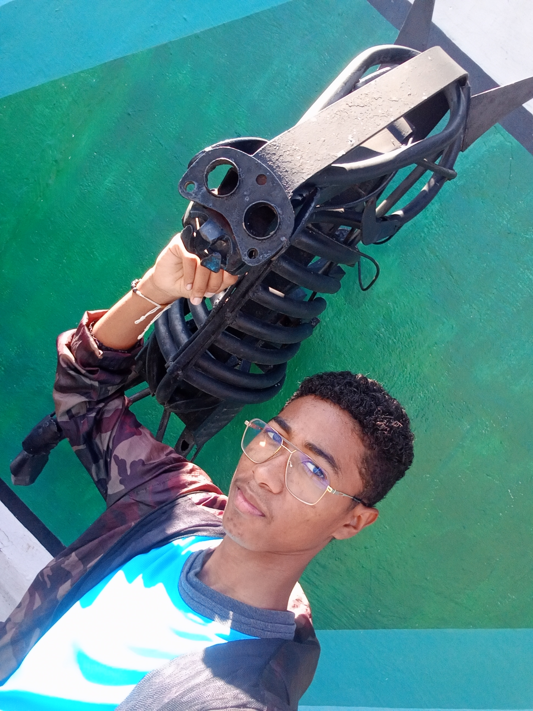

Desarrollo Web Frontend
Creación y maquetación de páginas web modernas, adaptables y estructuradas con HTML5 y CSS3.
Hola, soy Sebastian. Desarrollador Web Frontend apasionado por convertir ideas complejas en experiencias interactivas de alta precisión..

soy un joven estudiante cursando la carrera de informatica en la UPTAEB. En el tiempo que llevo cursando en la carrera me ha llamado la atencion lo que es la programación web ya que a diferencia de lenguaje c, la programacion web me parece mas atractiva a lo mejor sera por lo visual o porque de verdad solamente los limites de lo quieres hacer solamente te los pones tu, que la unica limitación que tienes es tu propia mente. Mis objetivos con esta carrera ademas de conseguir un titulo es poder considerarme un profesional en la programacion dominando cada uno de los lenguajes de programcion los cuales reciba a lo largo de la carrera y no solo quedarme con eso sino que ir mas allá hasta donde Dios me lo permita.
Creación y maquetación de páginas web modernas, adaptables y estructuradas con HTML5 y CSS3.
Diagnóstico, mantenimiento preventivo y correctivo de hardware y sistemas informáticos.
trabajando en ello...
puedes enviarne un mensaje o contactarme a traves de mis redes: